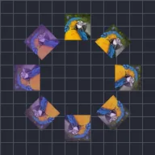

Radyal Tekrar

Katmanın birden çok kopyasını dairesel bir düzende dinamik olarak oluşturur.
Ayarlar
| Ayar | Tür | Aralık | Varsayılan |
|---|---|---|---|
| Adet | Sayı | 0 – 150 | 8 |
| Yarıçap | Sayı | 0 – 2000 | 300 |
| Yönelim | Açı | -3600° – 3600° | 0° |
| Açı | Açı | -3600° – 3600° | 0° |
| Tarama | Açı | -3600° – 3600° | 360° |
| Ölçek | Sayı | 0 – 10 | 1 |
| Aralık konumu | Nokta (X, Y) | -99999 – 99999 | 0, 0 |
| Aralık ölçeği | Sayı | 0 – 10 | 1 |
| Aralık döndürmesi | Açı | -3600° – 3600° | 0° |
| Aralık opaklığı | Sayı | 0% – 100% | 100% |
| Dolgu rengi | Renk | – | #FFFFFF |
| Dolgu miktarı | Sayı | 0% – 100% | 0% |
| Aralık başlangıcı | Sayı | 0% – 100% | 0% |
| Aralık sonu | Sayı | 0% – 100% | 100% |
| Aralık kayması | Sayı | -1000% – 1000% | 0% |
| Yumuşatma | Seçim | Doğrusal, Yavaş giriş, Yavaş çıkış, Yavaş giriş çıkış | Doğrusal |
| Rastgele sıra | Açık veya kapalı | – | Kapalı |
| Tohum | Sayı | 0 – 9999 | 0 |